Sessão 25: O Poema de Bênção de Jacó ConcluiSession 25: Jacob’s Poem of Blessing Concludes
Class Notes: Joseph
185 of 215
Session 25: Jacob’s Poem of Blessing Concludes
Key Takeaways
Yaaqov’s words for his sons often carry deep connections to the fate of their descendants in Joshua,
Judges, and beyond.
Dan’s blessing could mean he will be a judge over the snake or a snake himself.
Yoseph is set on analogy with Ishmael, recasting the division of Ishmael and Isaac as a story of
reconciliation in this new generation and into Israel’s future.
The Word About Zevulun
13 Zevulun , he dwells on the coast of the sea
and he is on the coast of ships,
his north part is by Sidon.
a
14 Yissakhar , he is a strong donkey
crouching down between the sheep pens.
b
15 And he saw a resting place, that it was good
and the land, that it was pleasant ,
a' and he bowed his shoulder to carry
and he became a forced laborer
16 Dan (דן) , he will judge (ידין) his people
like one of the tribes of Yisra'el.
May Dan (דן) be a snake on the path,
a viper along the way,
which bites the heel of the horse,
so its rider falls backward.
18 O Yahweh, I am waiting for your rescue!
19 Gad (גד) , a troop (גדוד) will raid him (יגדנו)
and he will raid (יגד) with the heel .
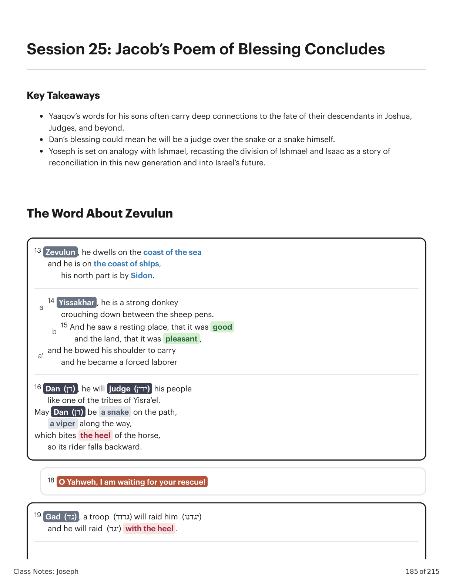
Gênesis X:Y. Tradução e Design Literário por Tim Mackie para BibleProject Classroom: José (2021).Genesis X:Y. Translation and Literary Design by Tim Mackie for BibleProject Classroom: Joseph (2021).
Class Notes: Joseph
186 of 215
Genesis 49:13-21. Translation and Literary Design by Tim Mackie for BibleProject Classroom: Joseph (2022)
Yaaqov’s word about Zevulun is linked to the region of the land where his descendants would settle in the
days of Joshua and the judges (see Josh. 19:10-16, 27, 34; Judg. 1:30).
The puzzle, however, is that in Joshua’s days, Zevulun settled many miles inland from the northern coast of the
Mediterranean. However, “dwelling” doesn’t have to mean permanent land-holding. The blessing of Moses on
Zebulun (Deut. 33:18-20) also links this tribe to the sea.
The Word About Yissakhar
IDF Mapping Unit. The Twelve Tribes of Israel, Israel Ministry of Foreign Affairs
This word also relates to the future land settlement of the tribe of Yissakhar. Their land holdings were right
next to Zevulun, inland from the coast and south-west of the lake of Galilee (see Josh. 17:10-11, 19:17-23).
Judges 1:19-34 makes clear that most of the tribes were not able to clear the land of its Canaanite inhabitants,
and so they intermixed with them. This narrative omits any mention of Yissakhar at all, a fact which this poem
appears to explore.
Yissakhar appears to have been a capable tribe (“a strong ass”) but he did not use his strength. Rather, this
tribe laid down passively (lazily?) among the sheep pens. Why? Because he found a nice resting place that
came with a cost: slavery and oppression, precisely the status to which Yissakhar's kinsmen reduced the
Canaanites in Judges 1: “forced laborer” )(למס = Judges 1:28, 30, 33, 35.
The Word About Dan
20 From Asher , rich is his bread,
so he will give delights of a king.
21 Naphtali , a doe sent out,
who gives lovely lambs.
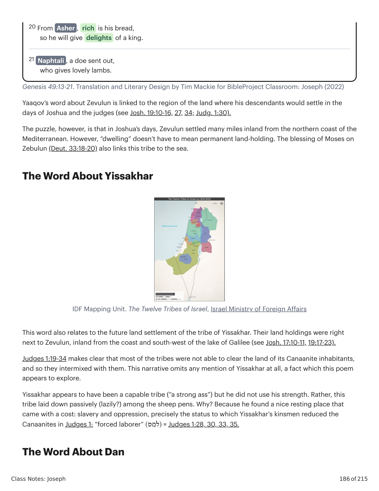
Gênesis X:Y. Tradução e Design Literário por Tim Mackie para BibleProject Classroom: José (2021).Genesis X:Y. Translation and Literary Design by Tim Mackie for BibleProject Classroom: Joseph (2021).
Class Notes: Joseph
187 of 215
The middle line of Yaaqov's poetic word about Dan is capable of two different interpretations, and both seem
intended.
Option 1
Genesis 49:16-17 Instructor's Translation
16 Dan, he will judge his people
as one of the tribes of Israel.
17 May there be a judge of the snake on the path
a viper along the way
which bites the heels of the horse
so that its rider falls backward.
Option 2
Genesis 49:16-17 Instructor's Translation
16 Dan, he will judge his people
as one of the tribes of Israel.
17 May Dan be a snake on the path
a viper along the way
which bites the heels of the horse
so that its rider falls backward.
The translation issue revolves around the name “Dan” in the Hebrew phrase יהי דן נחש. The basic challenge is
that the name Dan is the Hebrew word for “one who brings justice.”
This yields two possible meanings for Yaaqov’s words.
1. Option 1 anticipates a future Danite who will judge the snake!
2. Option 2 portrays Dan as a snake on a path.
The allusion to Genesis 3:15 is intentional, especially in light of the following word “viper” )(שפיפון, which
contains the consonants of the key word for “strike” in Genesis 3:15 .)(שוף
Dan never settled in their allotted tribal territory (Josh. 19:47) due to Canaanite hostility (Josh. 1:34), so they
migrated north of Galilee and settled there (see Josh. 18). They never held permanent land, and they were a
small but tenacious tribe.
This tribe produced an important hero, whose story is cryptically anticipated in this poem: Samson in
Judges 13-16.
Samson was a Danite (Judg. 13:2), and his entire story depicts him as a deceiver who is deceived unto
his own destruction, an anti-Genesis-3:15 figure. He is a wounded-victor, but he is deceived by his wife
and suffers because of his own sins. The entire Samson narrative develops the “seed of the woman vs.
snake” pattern from Genesis 3:15-16, which is anticipated here in riddle-like form.
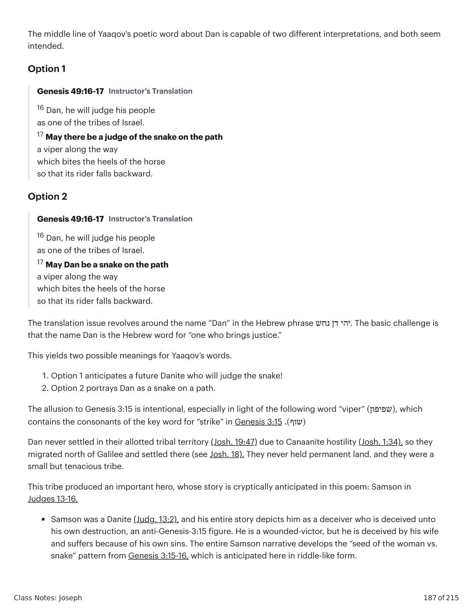
Gênesis X:Y. Tradução e Design Literário por Tim Mackie para BibleProject Classroom: José (2021).Genesis X:Y. Translation and Literary Design by Tim Mackie for BibleProject Classroom: Joseph (2021).
Class Notes: Joseph
188 of 215
Early Jewish Interpretations of Genesis 49:16-18
“16. From those of the house of Dan shall redemption arise, and a judge. Together, all the tribes of the sons
of Israel shall obey him. 17. This shall be the redeemer who is to arise from the house of Dan; he will be
strong, exalted above all nations. He will be compared to the serpent that lies on the ground, and to a
venomous serpent that lies in wait at the crossroads, that bites the horses in the heels and out of fear of it
the rider turns around and falls backward. He is Samson bar Manoah, the dread of whom is upon his
enemies and the fear of whom is upon those who hate him. He goes out to war against those that hate him
and kills kings together with rulers.” 18. Our father Jacob said: 'Not to the redemption of Gideon bar Joash
does my soul look, which is the redemption of an hour; and not to the redemption of Samson bar Manoah
does my soul look, which is a transient redemption. Rather to the redemption of him does my soul look that
you have said to bring your people, the house of Israel. To you, to your redemption, do I look, O Lord.'”
McNamara, Martin, translator (1991). Targum Neofiti 1: Genesis (The Aramaic Bible).. Liturgical Press.
“In blessing Dan, Jacob’s thoughts were occupied chiefly with his descendant Samson, who, like unto God,
without any manner of assistance, conferred victory upon his people. Jacob even believed the strong,
heroic man to be the Messiah, but when Samson’s death was revealed to him, he exclaimed, ‘I wait for Thy
salvation, O Lord, for Thy help is unto all eternity, while Samson’s help is only for a time. The redemption,’
continued Jacob, ‘will not be accomplished by Samson the Danite, but by Elijah the Gadite, who will appear
at the end of time.‘”
Ginzberg, Louis (2003). Legends of the Jews (2nd ed.). Jewish Publication Society. 408.
The Cry for Deliverance
This line appears, somewhat surprisingly, as a first-person exclamation addressed not to the sons, but to
Yahweh.
The phrase is a common liturgical one expressed in the Prophets and Psalms.
Psalm 25:5 NASB
Lead me in your truth and teach me,
for you are the God of my deliverance; for you I wait all the day.
Isaiah 25:9 NASB
And it will be said in that day,
“Behold, this is our God for whom we have waited that he might save us.
This is the LORD for whom we have waited;
let us rejoice and be glad in his deliverance.”
Isaiah 33:2 NASB
O LORD, be gracious to us; we have waited for you.
Be their strength every morning,
our deliverance also in the time of distress.
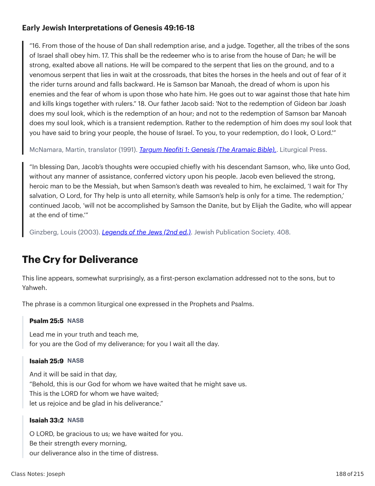
Gênesis X:Y. Tradução e Design Literário por Tim Mackie para BibleProject Classroom: José (2021).Genesis X:Y. Translation and Literary Design by Tim Mackie for BibleProject Classroom: Joseph (2021).
Class Notes: Joseph
189 of 215
Notice that this line appears in the structural center of the entire chapter, in between two sets of poetic
sayings about the brothers. But more specifically, it appears after the third poetic saying in the first two sets.
Interestingly, those brothers feature Yehudah and Dan, both of whom are described as contrasting animals
(lion vs. snake), and with imagery that recalls the Eden promise of Genesis 3:15-16 about a future seed of the
woman who will crush the snake and restore humanity’s rule over the world.
If the above observations about the link between Yehudah and Dan are correct, that would place Yaaqov’s cry
for deliverance in a seventh position after the two sets of three poetic sayings. This is a common design
strategy in biblical literature, to place a climactic seventh statement after a series of triads (like the seventh
day after the six days of creation in Genesis 1:1-2:3, or like the 10th Passover plague after the nine plagues of
the Exodus in Exodus 7-13).
Triad #1
Triad #2
1. Reuven
4. Zevulun
2. Shimon and Levi
5. Yissakhar
3. Yehudah the lion !
6. Dan the snake !
7. “For your deliverance I wait, Yahweh!”
Two Triads of Jacob’s Sons. Created by Tim Mackie for BibleProject Classroom: Joseph (2022).
The Word About Gad
This poem exploits the letters of Gad’s name and their similarity with the Hebrew word gedud, which means
“a unit of soldiers” (see this word in 1 Sam. 30:8, 15, 23; 2 Sam. 3:22; 2 Kgs. 6:23), or the verb gad, “to raid.”
This poem anticipates the role played by Gad (along with Reuven and half the tribe of Manasseh) in the
conquest of the land: He will cross over and participate in the raid on Canaan (Num. 32:16–32; Deut. 3:18;
Josh. 1:12, 4:12).
There is a translation challenge revolving around the meaning of “heel.” Is it the (1) object of “raid” (i.e., Gad
will be stomped by a raiding heel of an enemy army)? Or (2) an instrumental accusative, in which case this
line joins with the poem about Dan—Gad also will produce one who “raids with the heel,” which is another
allusion to Genesis 3:15.
The Word About Asher
The name “Asher” is formed from the Semitic root word “to declare someone is blessed with abundance” (see
the word in other contexts in Gen. 30:13; Mal. 3:12; Ps. 72:17). And this “blessing” theme of Asher’s name
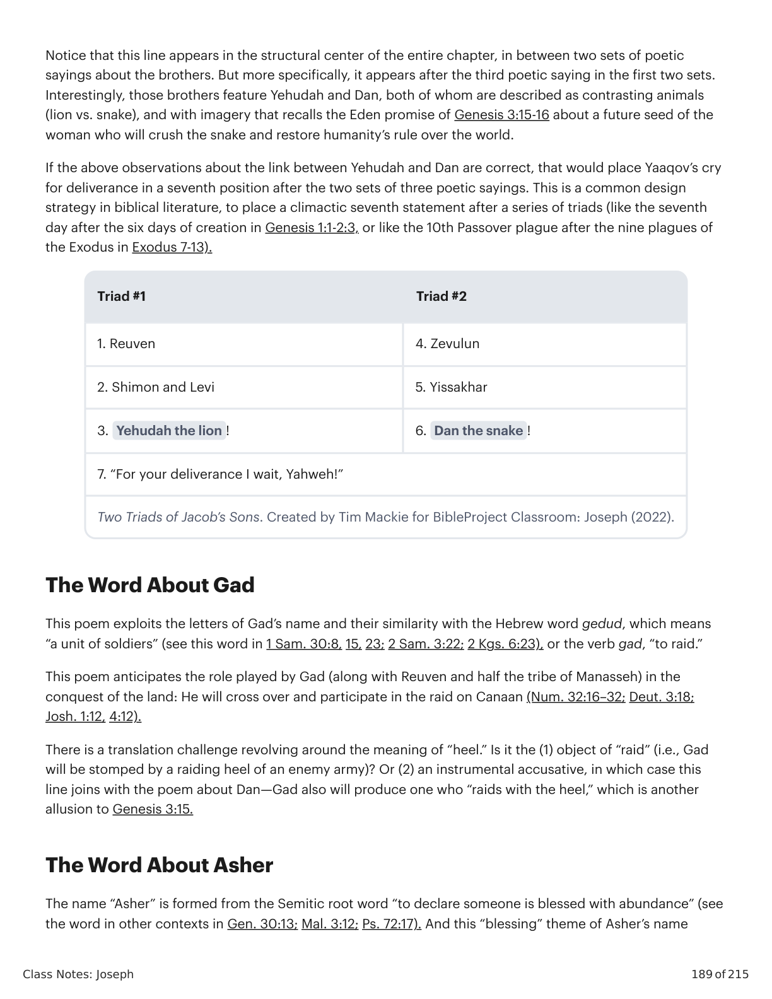
Gênesis X:Y. Tradução e Design Literário por Tim Mackie para BibleProject Classroom: José (2021).Genesis X:Y. Translation and Literary Design by Tim Mackie for BibleProject Classroom: Joseph (2021).
Class Notes: Joseph
190 of 215
evokes the Eden narrative, which will be drawn upon in this short poem.
This tribe settled west of Galilee in the fertile hills between Carmel and the coast where the Phoenicians were
located (Josh. 19:24-31). The fertility of this region is reemphasized in Moses’ blessing (Deut. 33:24).
The “delights” )(מעדן are an allusion to Eden )(עדן, but tragically this tribe will offer its Eden delights to the
Canaanites, as recounted in Judges 1:13-21.
The Word About Naphtali
This tribe settled west of the lake of Galilee from its southern end up to Lake Huleh, north of the lake of
Galilee (Josh. 19:32-39). They had to coexist with Canaanites they could not drive out, until they won a few
cities for themselves (Judg. 1:33).
This tribe played an honorable role in the battle of Deborah because Barak, the Israelite general, was from
Naphtali (Judg. 4:6, 5:18).
The final two words (lit. ‘imrey shapher / אמרי שפר) admit multiple interpretations.
1. “lovely words” = a herald of victory in the war of Deborah, see Judges 4:6, 10 and 5:18.
2. “lovely lambs/fawns = tribute of animals to Canaanite overlords, just as “give” means offering tribute in
the words spoken to Yissakhar (Gen. 49:15) and Asher (Gen. 49:20).
3. “lovely boughs” = metaphor of a spreading tree, an image of fruitfulness.
The Manifold Blessing on Yoseph
22 Yoseph is a son of a wild female donkey,
son of a wild donkey by a spring,
(sons of) wild donkeys by Shur.
23 They were hostile to him, and they fired,
and they were opposed to him, those possessing arrows.
24 But his bow remained perpetual,
and the hands of his arms were agile,
because of the hands of the Strong One of Ya'akov ,
from there is the Shepherd, the Rock of Yisra'el ,
25 from the Elohim of your father , who will help you,
and Shaddai , who will bless you:
blessings from heaven above
blessings from the deep, lying beneath
blessings of breast and womb,
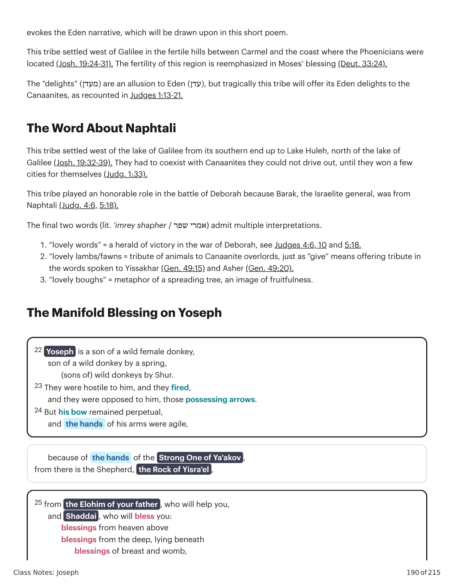
Gênesis X:Y. Tradução e Design Literário por Tim Mackie para BibleProject Classroom: José (2021).Genesis X:Y. Translation and Literary Design by Tim Mackie for BibleProject Classroom: Joseph (2021).
Class Notes: Joseph
191 of 215
Genesis 49:22-26. Translation and Literary Design by Tim Mackie for BibleProject Classroom: Joseph (2022)
The opening line of the poem about Yoseph is a riddle filled with Hebrew words capable of more than one
meaning. This produces an “overabundance of possible meaning” that matches the theme of the poem,
which is about a son given an overabundance of favor and abundance. Here are two possible translations
alongside one another; both meanings are intended.
Possible Meaning 1
Genesis 49:22-24 Instructor's Translation
22 Yoseph is a son of a wild female donkey,
son of a wild donkey by a spring,
(sons of) wild donkeys by Shur.
23 They were hostile to him, and they fired,
and they were opposed to him, those possessing arrows.
24 But his bow remained perpetual,
and the hands of his arms were agile
Yoseph is compared to a young male donkey (a foal), born to a wild female donkey, which finds itself by a
desert spring on the way to Shur, a desert oasis stop south of the land promised to Abraham (see Gen. 16:7
and 20:7).
This meaning uses the key words “wild female donkey” )(פרא // פרת, “spring” )(עין, and “Shur” )(שור to recall
the stories of Hagar and Ishmael, comparing them to Rachel and Yoseph.
Recall that in Genesis 16:7, Hagar flees from Sarai to a spring )(עין on the way to Shur )(שור, and she
hears from an angel that her son will be a “wild donkey” )(פרא of a human.
Recall that in Genesis 20:7, Ishmael and Hagar live in the wilderness where he “is a shooter of the bow”
)(רבה קשת.
The reference to a hostile “they” in 49:23 would then refer to Yoseph’s jealous older brothers, activating the
brothers // Esau analogy (see Gen. 27:41, “And Esau was hostile )(שטם to Yaaqov”).
On this reading, Yoseph is the blessed and chosen younger brother who unlocks the divine blessings of Eden
for others, but he was persecuted by his elder brothers and chased into the wilderness like Ishmael. But God
kept Yoseph’s arms stable and blessed him with cosmic blessing (skies and abyss = Gen. 1 vocabulary).
Possible Meaning 2
Genesis 49:22-24 Instructor's Translation
26 the blessings of your father, they are mighty
above the blessings of the mountains
up to the desire of eternal hills .
These will be upon the head of Yoseph ,
on the crown of one set apart from his brothers.
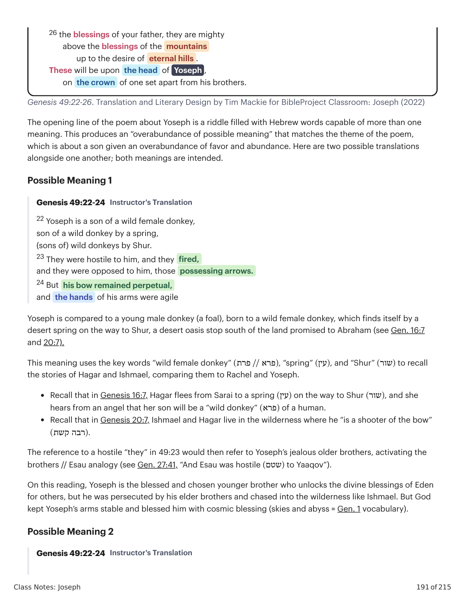
Gênesis X:Y. Tradução e Design Literário por Tim Mackie para BibleProject Classroom: José (2021).Genesis X:Y. Translation and Literary Design by Tim Mackie for BibleProject Classroom: Joseph (2021).
Class Notes: Joseph
192 of 215
22 Yoseph is a son of a fruit-bearing (tree),
a fruit-bearing (tree) by a spring,
daughters striding over a wall.
23 They were hostile to him, and they fired,
and they were opposed to him, those possessing arrows.
24 But his bow remained perpetual,
and the hands of his arms were agile
Yoseph is compared to a branch from a fruit-bearing tree (literally “son of a fruit-bearer”) that is located by a
spring, with tendril-runners (literally “daughters”) that climb over walls to spread their fruitfulness outside the
garden.
“Son of a fruit-bearer” is a possible way the images could be understood, and so Yoseph would be
compared to a fruit-tree bearing much fruit (i.e., Yaaqov and Rachel).
The “spring” would be the gift of Yahweh’s blessing on the chosen ones.
The “wall” would represent the overabundance of God’s fruitful blessing, so that even a garden wall
can’t contain the blessing as it spreads out of its original area of planting.
These Eden images are so rooted in the narrative of Genesis 2-3, as well as the Eden imagery activated
by Yoseph’s rule over his family in the land of Goshen (which is an Eden place), it is unlikely that these
possible meanings were not in the mind of the poet.
The Royal Blessing on Yoseph
The blessing given to Yoseph recalls the blessing given to Yaaqov by his father Isaac in Genesis 27. This
similarity makes it clear that Yoseph is being marked as the firstborn among all the sons.
Genesis 49:25-26
Yaaqov’s Blessing on Yoseph
from the Elohim of your father , who will help you,
and Shaddai, who will bless you:
blessings from the skies above
blessings from the deep, lying beneath
blessings of breast and womb,
the blessings of your father , they are mighty
above the blessings of the mountains
up to the desire of eternal hills.
These will be upon the head of Yoseph ,
on the crown of one set apart from his brothers .
Genesis 27:27-29
Isaac’s Blessing on Yaaqov
See, the smell of my son,
like the smell of the field,
which Yahweh has blessed.
May Elohim give to you from the dew of the skies,
and from the fat of the land,
Symmetry in Blessing of Joseph and Jacob. Created by Tim Mackie for BibleProject Classroom: Joseph
(2022).
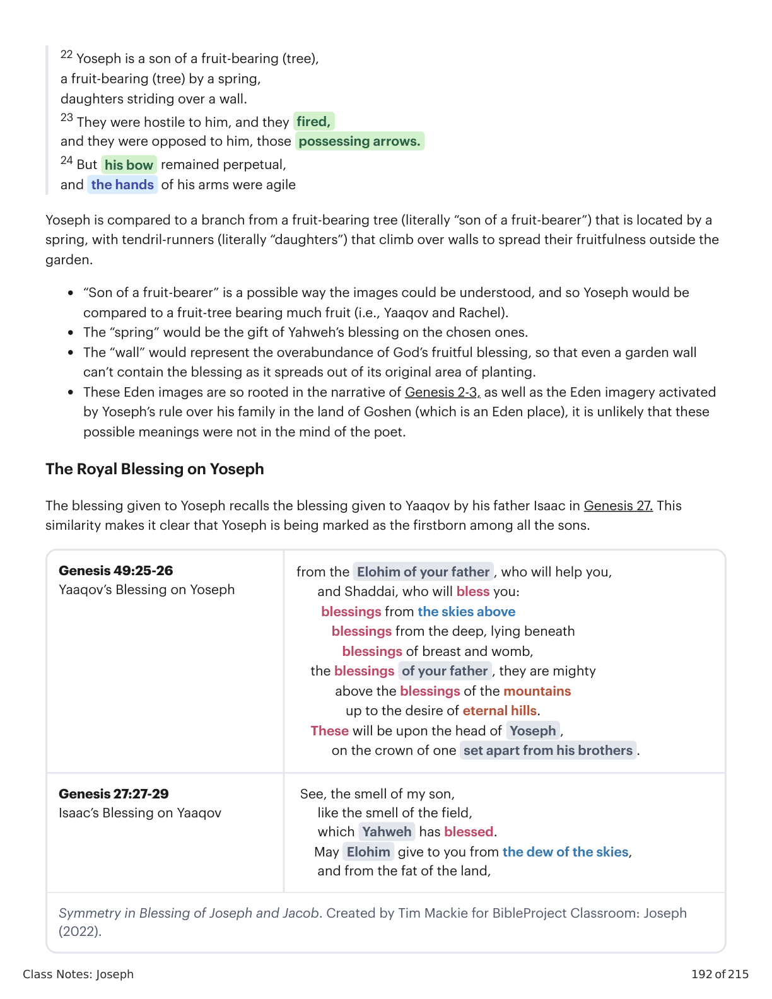
Gênesis X:Y. Tradução e Design Literário por Tim Mackie para BibleProject Classroom: José (2021).Genesis X:Y. Translation and Literary Design by Tim Mackie for BibleProject Classroom: Joseph (2021).
Class Notes: Joseph
193 of 215
and much grain and new wine.
May peoples serve you,
and may people groups bow down to you ,
be a mighty one to your brothers,
and may the sons of your mother bow down to you.
Cursed are those who curse you,
and those who blessed you are blessed.
Symmetry in Blessing of Joseph and Jacob. Created by Tim Mackie for BibleProject Classroom: Joseph
(2022).
It’s clear that Yoseph is inheriting the divine blessing of abundance that has marked the promised lineage
from Abraham to Isaac to Yaaqov.
Notice the echoes of Genesis 1:1-2 (“skies,” “the deep,” the land”) and also of the human image of Elohim
who is “set apart” from the animals to a place of blessing and rule.
Now that Yoseph and Yehudah have each received their blessings, notice that the two aspects of the
image of Elohim from Genesis 1 have here been allotted to two special sons of Yaaqov.
Genesis 1:27–28
Elohim created human in his own image,
in the image of Elohim he created him;
male and female he created them.
And Elohim blessed them;
and Elohim said to them,
“Be fruitful and multiply,
and fill the land, and subdue it;
and rule over the fish of the sea and over the birds of the sky
and over every living thing that moves on the earth.”
Yehudah
Eden abundance
A ruler among the sons of Yisrael
A ruler among the nations
Yoseph
Eden abundance
Royal status among the sons of Yisrael
Comparing Judah and Joseph. Created by Tim Mackie for BibleProject Classroom: Joseph (2022).
Both sons are given the Eden blessing of abundance and of royal rule among the brothers. Only Yehudah is
assigned a place of rule outside of the family of Israel. This dual blessing sets up the reader for the long
history of rivalry that will plague these two tribes, which will come to dominate Israel’s story in the land. It is
the tribe of Yoseph’s son Ephrayim who will become the most powerful and numerous in the north, and the
tribe of Yehudah will dominate in the south.
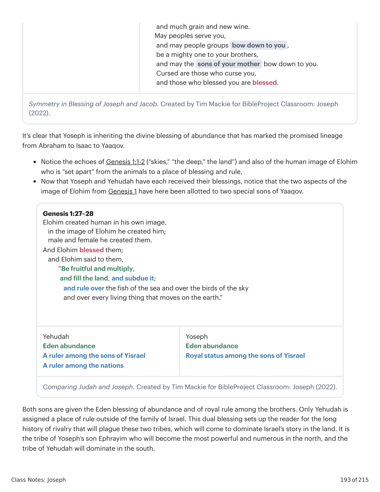
Gênesis X:Y. Tradução e Design Literário por Tim Mackie para BibleProject Classroom: José (2021).Genesis X:Y. Translation and Literary Design by Tim Mackie for BibleProject Classroom: Joseph (2021).
Class Notes: Joseph
194 of 215
This division in the age of the patriarchs is a preview of the division that will take place after David and
Solomon’s death (1 Kings 1-2 and 11). The kingdom of “Yisrael and Yehudah” will split into north and south, and
Rehoboam and Jeroboam will become the descendants who replay the rivalry of their ancestors (see
1 Kings 12-14).
The Word About Binyamin
Genesis 49:27-28. Translation and Literary Design by Tim Mackie for BibleProject Classroom: Joseph (2022)
Here the tribe of Binyamin is portrayed as aggressive and powerful, which is pretty much the opposite of his
passive and powerless portrait in Genesis 42-46.
The aggressive nature of the sons of Binyamin are a core theme of Judges-Samuel.
Ehud (Judg. 3:15)
The warriors of Binyamin in the battle of Deborah (Judg. 5:14)
The notoriously accurate slingshot warriors of Binyamin (Judg. 20:15-16) who fought savagely in the
Israelite civil war described in Judges 20
The territory of this tribe occupied the central location between Yehudah in the south and Ephraim in the
north (Josh. 18:11-20), as well as the main road from east of the Jordan to the western Mediterranean—i.e., it
was the arena of many wars throughout Israel’s history.
We can detect allusions to Saul in this poem. Israel’s first king was from Binyamin, and his downfall was
precisely in his aggressive “eating” of the “plunder” in 1 Samuel 14:30-32 and 15:19-21.
Notice that the sequence of sons corresponds to the symmetrical arrangement of the triads and to the
distribution of animal imagery in the poems. Yehudah and Binyamin occupy matching positions as the
conclusion to the first and last triad, pairing the imagery of lion versus wolf. Recall that David and Saul were
from the tribes of Yehudah (lion) and Binyamin (wolf).
27 Binyamin , a wolf who will tear.
In the morning he devours,
and in the evening he divides plunder.
28 All these are the twelve tribes of Yisra’el ,
and this is what their father said to them,
and he blessed them,
each according to his blessing,
he blessed them.
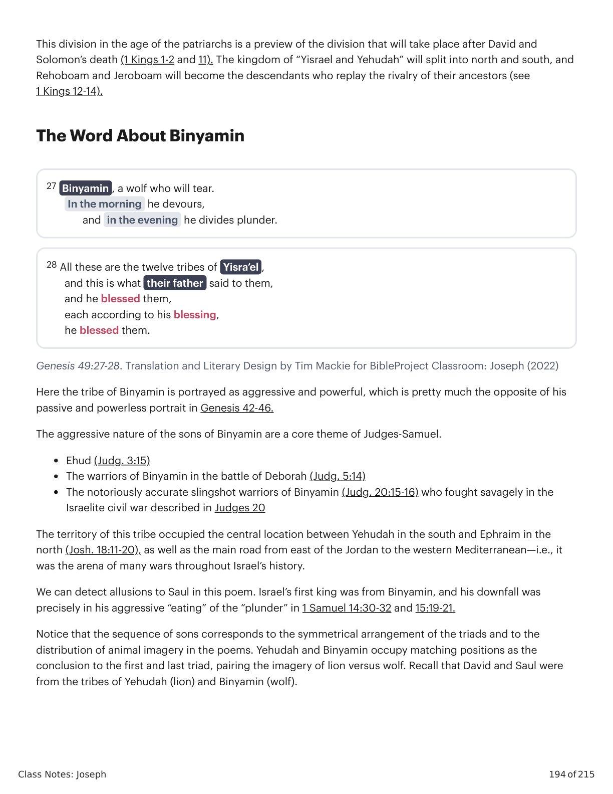
Gênesis X:Y. Tradução e Design Literário por Tim Mackie para BibleProject Classroom: José (2021).Genesis X:Y. Translation and Literary Design by Tim Mackie for BibleProject Classroom: Joseph (2021).
Class Notes: Joseph
195 of 215
1. Reuven
2. Shimon and Levi
3. Yehudah the lion!
A
1. Zevulun
2. Yissakhar the donkey
3. Dan the snake
B
“For your deliverance I wait, Yahweh!”
1. Gad
2. Asher
3. Naphtali the deer
B’
Yoseph the wild donkey
1. Ephrayim
2. Manasseh
3. Binyamin the wolf
A’
Judah and Benjamin the Animals. Created by Tim Mackie for BibleProject Classroom: Joseph (2022).
Reflection Question
What are some implications of the links between Yoseph and Ishmael in Yaaqov’s poem of blessing in
Genesis 49:22-26?
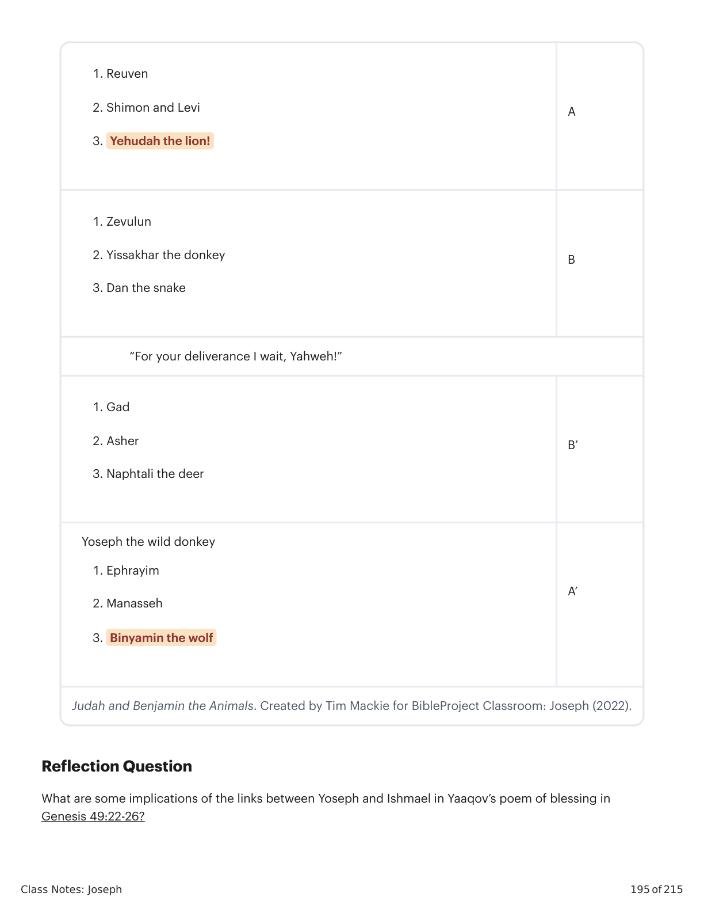
Gênesis X:Y. Tradução e Design Literário por Tim Mackie para BibleProject Classroom: José (2021).Genesis X:Y. Translation and Literary Design by Tim Mackie for BibleProject Classroom: Joseph (2021).
Class Notes: Joseph
196 of 215
Module 7: Going Up to Canaan
SESSIONS 26-29
As Jacob and Joseph reach the ends of their long lives, each looks forward with hope
to a promise of God’s faithfulness beyond the grave.